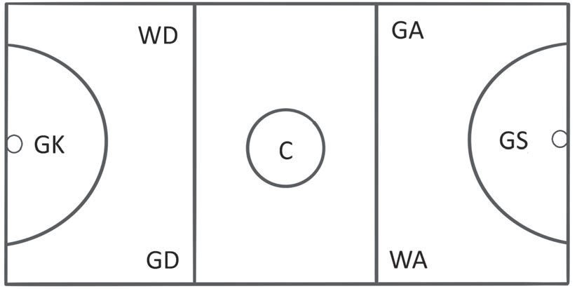

Kielelezo namba 8: Nafasi za uchezaji katika netiboli
Golikipa (GK): Anaruhusiwa kucheza eneo la duara la goli lake na eneo la robo ya ulinzi la timu yake.
Mlinzi (GD): Anaruhusiwa kucheza eneo la duara la goli lake, eneo la robo ya ulinzi na robo ya katikati mwa uwanja.
Mlinzi wa pembeni (WD): Anaruhusiwa kucheza eneo la robo yake ya ulinzi na robo ya katikati mwa uwanja.
Kiungo (C): Anaruhusiwa kucheza eneo lolote la uwanja isipokuwa kwenye duara la goli lake na la mpinzani
Mshambuliaji (GA): Anaruhusiwa kucheza eneo la goli la timu pinzani, eneo la kushambulia na robo ya katikati ya uwanja.
Mfungaji (GS): Anaruhusiwa kucheza eneo la duara la goli la timu pinzani, na eneo la robo ya kushambulia.
Mshambuliaji wa pembeni (WA): Anaruhusiwa kucheza eneo la robo ya katikati na eneo la robo ya kushambulia la timu pinzani.